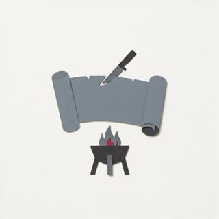
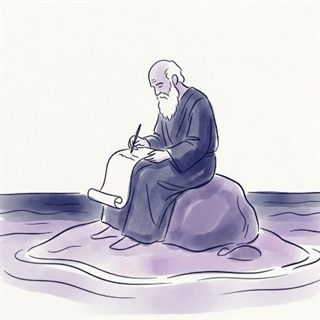
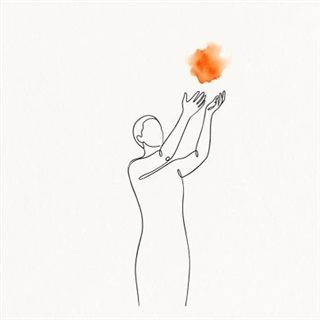
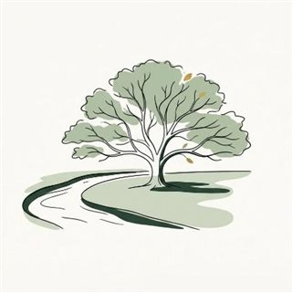

-

Now Hear This!
Pamatii Ninyo Ini!
-
The Prophetic Writings
Ang mga Sinulat sang mga Manalagna
-

Revelation and Inspiration
Bugna kag Inspirasyon
-
New Testament Prophets
Mga Manalagna sang Bag-o nga Katipan
-
Old Testament Prophets
Mga Manalagna sang Daan nga Katipan
-

The Call of a Prophet
Ang Pagpanawag Sang Manalagna
-

The Creator Speaks
Ang Manunuga Nagapamulong
Help us make these better
Was something hard to read, confusing, or not working? Did a lesson help you? Tell us. It is anonymous: no name or email is asked. Puede ka magsulat sa Hiligaynon ukon English.